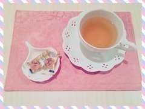

返回列表-BACK TO INDEX
最近タイトルのナンバリングが
ぐしゃぐしゃですね( >_< )
また間違ってましたね
ご指摘くださった皆さんありがとう
毎度ごめんね～
チーム名古屋！
土曜日は色んな媒体さんに
お世話になりました( ˇωˇ )
◯東海テレビ スタイルプラス(放送済)
◯め～テレ デルサタ！
◯め～テレ BOMBER-E 4/5,4/12
◯中日スポーツ
放送される地域にお住まいの皆さん
是非チェックしてみて下さい！
日曜日は乃木坂3期生募集セミナーに
参加してきました( ˇωˇ )
今までこんなのなかったから
いいな～って思っちゃった。
学校説明会みたいな気分だったよ！
乃木坂ちゃんに興味を持って
参加してくれたのかな～嬉しい～
貴重な時間を過ごせたと思います
参加して下さった皆さん
ありがとうございました！
日曜の夜はらじらー！サンデー
ゲストは声優アーツに豊崎愛生さん
乃木坂から橋本奈々未ちゃんでした～！
久々のななみん登場だね！
らじらーまた来たいって言ってくれてたので
こちらもとっても嬉しかったo(^o^)o
対決企画ではまたも負けてしまったけれど
楽しかったからいいんだ～♪
今度は勝てるよう頑張ります～
次回、番組編成が少し変わります。
20:05～番組スタート
20:10～声優アーツ
21:05～日芽香ちゃん登場
です！出番ちょっと早くなったよ(^o^)
お聞き逃しのないように！
ゲストは声優アーツに茅原実里さん、
乃木坂から堀未央奈ちゃんの登場です。
私、連続になるけれど、
一週目なので乃木坂週だよ～！
今週のメールテーマはこちら。
◯ラブ♡ゾンビ対決
◯乃木坂46 どんな3期生？
◯究極の＞＜不等号
◯未央ちゃんへの応援メッセージ
レギュラーコーナーや
リクエストソング、ふつおたなどなど
メールお待ちしてます＼(^o^)／
おたよりの宛先はこちら。
そうだ、新年度になるし、改めて。
らじらー！サンデーは
NHKラジオ第一で
毎週日曜日20:05～
生放送でお送りしてます。
スマホの方はアプリ
「らじる☆らじる」をダウンロードすると
簡単に聞けますよ～♪
奇数週は乃木坂46、
偶数週はSKE48さんの担当。
稀に変わることもありますので
詳しくは公式サイトをチェックして下さい。
もしくは私が
公式サイトばりにお知らせするので
ここ見てると間違いないかな。笑
らじらー！サタデーは毎週土曜日
同じ時間にやってます
そちらも是非聞いて下さい。
乃木中では「不等号」
スタジオライブが流れました！
先週オンエアって知らなかったから
びっくりしたよ(・∀・)
それぞれの歌パートがわかるように
撮って下さってましたね。
個人的には間奏～ラストサビも
観て欲しかったなあ
28日は生ドルに
まいまいとゲスト出演しました！
まっちゅん、かなりん、ありがとう～♪
あの現場はいつも
アットホームな雰囲気だなーと思います
まっちゅんとかなりんの人柄故なのかな。
「ハルジオンが咲く頃」発売記念てことで
新曲のタイトルとかけた
いろんな企画を用意してくださいました～
楽しかった！
まいまいお誕生日おめでとう♡
さらに昨日はソニレコ生放送でした！
Kちゃん卒業SPということで
番組が始まってから2年半
MCとして盛り上げて下さったKちゃんを
みんなで送り出す会でしたね。
思い返せば
ソニレコの収録ではいつも
リラックスしていたな～
3人でほのぼのトークしたり、
皆さんからのメール紹介したり、
アーティストさんから色んな刺激を受けたり
私にとっては学びの場であり、
憩いの場であり、
半年間この番組に携われて
本当に幸せだったなあと(´｡•ω•｡`)
ゆるゆるな空気感って
狙ってできるものではないと思っていて。
そこはスタッフさんやKちゃんの
懐の大きさ深さなんだなって
フォローはこちら側がするから
君たちは何やってもいいんだよっていう。
なんと素敵な番組なんでしょう！
私、皆さんも番組観てて
お気づきかもしれないけれど
仲良くなるまで被ってる仮面が
結構分厚いから(笑)
やっと最近
馴染めてきたような気がしてて
収録がいつも楽しみで楽しみで
だから凄く寂しいし、
改めてソニレコは私にとって
大切な存在だったんだなと
感じました( ˇωˇ )
番組はこの春から
しばらくお休みになってしまいます。
春ってそういう季節だよね
聞いた時は寂しい気持ちになりましたが、
でもスタッフの皆さんは私と愛未に
「絶対またやろう！
これは終わりじゃないんだ！」
って言って下さいました( ˇωˇ )
だからあれは最終回じゃなかった。
また戻ってくるその日まで
皆さん、待っててください！
～お知らせ～
4/2 グラビアザテレビジョン
4/6 トップエール
4/10 マーキー
4/15 EX大衆
4/22 BRODY
4/23 UTB
4月なんてことだ！
もうちょっと実はあるのですが
そのうちお知らせできると思いますo(^o^)o
新曲のこと、名古屋ライブのこと、
これから始まる東北ツアーのこと、
ハタチになりますね～みたいなこと
いろんなお話させていただいてます
是非チェックしてみて下さい～
4月からNOGIBINGO!6始まるんだもんね
乃木ののは時間が変わるんだよね
乃木恋も事前登録始まってるらしい
たくさんあって大変かもだけど
全部観てね！！！
あ、SUUMOムービー
メイキングも公開されたのでよかったら
公式チャンネルへ遊びに行ってみて下さい～
(＊´・ω・＊)
2016/03/31 23:36｜
昨日の今日ですみません！
どうしても皆さんにお知らせしたいことが
いくつか出来たので更新します(^o^)
◯SUUMO WEBムービー
本日3月25日情報解禁になりました
私は「話題の動画を観るあなたへ。」篇に
出演させていただいています！
お部屋でのんびりしてるシチュエーションは
46時間TVで趣味探ししてる私を観た
スタッフさんが思いついてくださったそう。
普段の私そのまんまですね。笑
他にも全部で10名のメンバーが
色々なバージョンの動画に出演しています
是非探してみてください！
メンバーみんなの個性が詰まった
素敵なムービーです(´｡•ω•｡`)
◯ソニレコ生放送決定！
今日配信されたソニレコを
観ていただいた方には
わかるかと思いますが
ソニレコはなんと3月で
Kちゃんが卒業することになりました
うー悲しい寂しい(´;ω;`)
つきましては、
Kちゃん最後のソニレコを
30日に生放送でお送りします！
ソニレコ卒業の
本当の理由はなんなのか！？
きっと語っていただけると思います。
ロケ行ったりもしました～＊
チャンネル登録はこちらから！
◯2016年度 生誕Tシャツ
デザインしました！
いつも通りピンクにしました！
是非チェックしてみて下さいませ( ˇωˇ )
日曜日は乃木坂3期生募集セミナーに
お邪魔します！
秋元・高山・中元の3人は
愛知会場です( ˇωˇ )楽しみ♪
参加してくださる皆さんよろしくね！
他にもこの土日、
日本全国いろんなところで
メンバーがお世話になります！
これを機に乃木坂ちゃんに
興味を持ってもらえたら嬉しいな～＊
日曜の夜はらじらー！サンデー
次回のゲストは声優アーツに豊崎愛生さん
乃木坂からは橋本奈々未ちゃんが
来てくれます。
各コーナーへのメール
まだまだ募集してるよーう☆
おたよりの宛先はこちら！
～お知らせ～
3/27 のぎえいご
3/28 生ドル
3/30 ソニレコ生放送
4/2 グラビアザテレビジョン
4/6 トップエール
4/10 マーキー
4/22 BRODY
4/23 UTB
わーこんなにたくさん！嬉しい♡
トップエールさんは連載の他に
かりん・佐々木・中元で
インタビューもしていただきました(^o^)
んーそうだなー
最後にプライベート話を少しだけ。
最近バタバタしてたので
久々に万理華ちゃんとふたりで
ゆっくりお話しました～＊
楽しかったん( ˆωˆ )
今いろんなメンバーと
お話会する約束をしております
実現したら報告するね☆
(＊´・ω・＊)
2016/03/25 23:42｜
14thシングル
「ハルジオンが咲く頃」発売！
今回の個人PVは12変化！
いろんな私を観ていただける作品に
なってます(´｡•ω•｡`)
撮影にたっぷり時間をかけていただき
おかげで全部終わる頃には
家族のような雰囲気になっていた
あたたかい現場でした(´｡•ω•｡`)
演者よりスタッフさんの方が
何倍も大変だったと思います。
でも、ここまで来たら良いものを作ろう！
って言って最後までみんなで頑張りました。
是非ご覧下さい！
ミュ～コミ＋プラスに
出演させていただきました(^o^)
楽しかったー(^o^)！
本番前よっぴーさんと
アニメの話やらアイドルの話やら
ずっとしてた(^o^)
本番も曲の告知をそこそこに
ずっと趣味話してた(^o^)
とにかく楽しかったです！
ありがとうございました！
◯アプリゲーム「乃木恋」
◯真夏の全国ツアー2016
◯LINEアカウント新設
いろんなことが発表になってますね。
私はもはやついていけてないんですが(笑)
皆さんは乃木坂46公式サイトから
チェックしてくださいね！
乃木恋の公式サイトがあるらしい！
日曜の夜はらじらー！サンデー
今年度最後の放送です。
ゲストは声優アーツに豊崎愛生さん、
乃木坂から橋本奈々未ちゃんが
来てくれますo(^o^)o
◯ひめたん1年総決算
◯乗り越えろっ！キミの急斜面！
◯キャラ変え対決
◯妄想PERFECT HUMAN
ななみんへの応援メッセージ、
レギュラーコーナーへのおたよりも
お待ちしてますo(^o^)o
おたよりの宛先はこちら！
～お知らせ～
3/27 のぎえいご
3/28 生ドル
4/2 グラビアザテレビジョン
4/6 トップエール
4/10 マーキー
4/22 BRODY
グラビアザテレビジョンさん
一年ぶりの登場o(^o^)o
前回のテーマは「ひめたんらしい感じ」
今回のテーマも「ひめたんらしい感じ」
なるほど、私自身が変わったんだなきっと。
去年のVol.40がお手元にある方は
見ていただければわかるかな
めちゃめちゃ語ってたと思います、が
今年はそれ以上に
インタビュー載せていただけるそうで
ボリュームたっぷりになる予感( ˇωˇ )
スピリッツさんのオフショット
たくさんあるー♡
浴衣もいいけど、
このスウェットの衣装
めっちゃ好き♡
うえーい！プールだー！って
喜んでクロールやっちゃう小百合、
一緒に泳いでついていく万理華、
のらない日芽香。
(＊´・ω・＊)
2016/03/24 23:36｜
アンダーライブ
全国ツアー名古屋公演
～永島聖羅卒業コンサート～
終わりました！
来てくださった皆さん
ありがとうございました( ˇωˇ )
安心して卒業してもらいたくて
今までらりんが担っていた仕事を
私やメンバーみんなで背負って
ステージに立つことになったのですが
改めて感じたことが
彼女がいたから成立していたんだなというか
頼りっきりだったんだなというか。
ギリギリの中でやってたので
本番を迎えるまで
不安で不安で仕方がなかった。
でも今回のライブを通して
自分の役割を再認識させられました
これから始まる全国ツアーは
こんなスタンスで行こう、みたいな。
らりんのアイドルとしての
ラストステージに一緒に立てたことが
本当に良かったなと思います。
最後の最後、幕が下りたあとも
「なんか実感湧かないね」っていって
みんなで笑って楽屋に帰りました。
きっと後になって
だんだん寂しくなるんだろうな～
もう現場には来ないんだよね。
何かあったらすぐ
会いに行こうと思ってます(・∀・)b
東京帰ってから
ライブ映像を観たのですが
彼女の笑顔が眩しくて眩しくて。
あの屈託のない笑顔、
誰でも出来るものじゃないんだよね
トレードマークとはこのことだなって。
新しい夢への第一歩、
応援してます。
卒業おめでとう！
乃木團もこれにて解散。
20日昼公演で最後の演奏をしました。
ライブリハのあとでみんなで集まって
遅い時間までスタジオこもって練習して
なんかバンドっぽいね～とか言って( ˇωˇ )
氣志團さんとの対バンライブに始まり
西武ドーム、台湾公演、乃木坂46SHOW、
いろんなところで演奏したな～
翔さんとの対談も忘れられません。
たくさんの経験をさせていただきました
ありがとう乃木團！！
3/19 スピリッツ発売
万理華・小百合と3人で
表紙&巻頭グラビアをさせていただきました
カメラマンは川島小鳥さん！
「ふろがーる」とのコラボ企画！
この3人と言えば温泉、てことで
熱海に行ってきました
嬉しかった～( ˇωˇ )
日曜の夜はらじらー！サンデー
次回のゲストは
声優アーツに豊崎愛生さん、
乃木坂から橋本奈々未ちゃんが登場。
4週目ですが乃木坂回です
お間違いなきように！
ななみんへのおたよりお待ちしてます～
毎週金曜はソニレコ配信日！
3週目分が配信されてますね
是非チェックしてみて下さい。
チャンネル登録はこちらから！
明日、3/23
14thシングル「ハルジオンが咲く頃」
いよいよ発売になります。
あ、そうだ、
「ミュ～コミ＋プラス」ゲスト出演します
聞いてね！
～お知らせ～
3/23 ミュ～コミ＋プラス
3/27 のぎえいご
3/28 生ドル
4/6 トップエール
4/10 マーキー
最後に！
今週末に行われるセミナー
名古屋会場にお邪魔します！
初めてのことなので
どんな感じになるのかわからないですが
楽しみですo(^o^)o
(＊´・ω・＊)
2016/03/22 23:54｜
アー写が14th制服になりました！
明日からいよいよ
アンダーライブ全国ツアーが
始まります。
スタートは名古屋公演。
せいらりんの卒業コンサートです
いろいろやります。
最後まで楽しい時間になりますように♡

優雅なティータイム風に見えますが
結構苦い香りがしてきます、
喉に良いお茶と喉に良い飴ちゃん。
マネージャーさんが
用意してくださいました(´,,•ω•,,｀)
そしてライブが終わったら
すぐ14thシングル発売ですね。
アンダー曲......type-D
個人PV......type-B
に収録されています。
ひめたんしかー！って方は是非
チェックしてくださいませ( ˇωˇ )
そうそう、MV解禁になったんですね
14thアンダー曲「不等号」の
センターを務めさせていただいています
単独でのセンターは11th以来、
あれからちょうど一年経つんですね
再び任せてもらえるなんてありがたい。
一年前と今とでは
アンダーメンバーの雰囲気は
随分変わった気がします。
メンバー編成が変わり、
各々が担うものが大きくなり、
気づけば私自身、このチームの中で
お姉さん側の立場になっていました。
層が厚い、誰が真ん中でも成立する、
今のアンダーメンバーはそれくらい
キラキラしてるし、みんな頼もしい。
そんな中で今回
センターに立つということ
改めて、その意味を考えなければ。
変わらないことが一番怖い、
精一杯頑張ります。
さて、いくつかお知らせがあります！
3月23日 24:00～24:54
ニッポン放送「ミュ～コミ＋プラス」
中田・中元で出演します！
わーい＼(^o^)／嬉しい！
番組ホームページはこちらです
おたより待ってるよ～
4/6はトップエール発売～
連載「乃木坂46中元日芽香の挑戦！」
毎回いろんなことに挑戦してます
今回は中塚翠涛先生に
「美文字」を教えていただきました！
楽しかったよお習字o(^o^)o
～お知らせ～
3/18 AKB新聞
3/19 ビックコミックスピリッツ
3/23 ミュ～コミ＋プラス
3/27 のぎえいご
4/6 トップエール
4/10 マーキー
スピリッツさんの写真早く載せたい！！
毎週金曜はソニレコ更新日。
3月のお当番は鈴木絢音ちゃん、
ゲストにThinking Dogsの皆さんを
お迎えしました(^o^)
なんかいろいろカオスなことになってます
ひまっぴーの壁ドン！！！
チャンネル登録はこちらから。
坂ポーズ！！
(＊´・ω・＊)
2016/03/18 23:54｜
返回列表-BACK TO INDEX